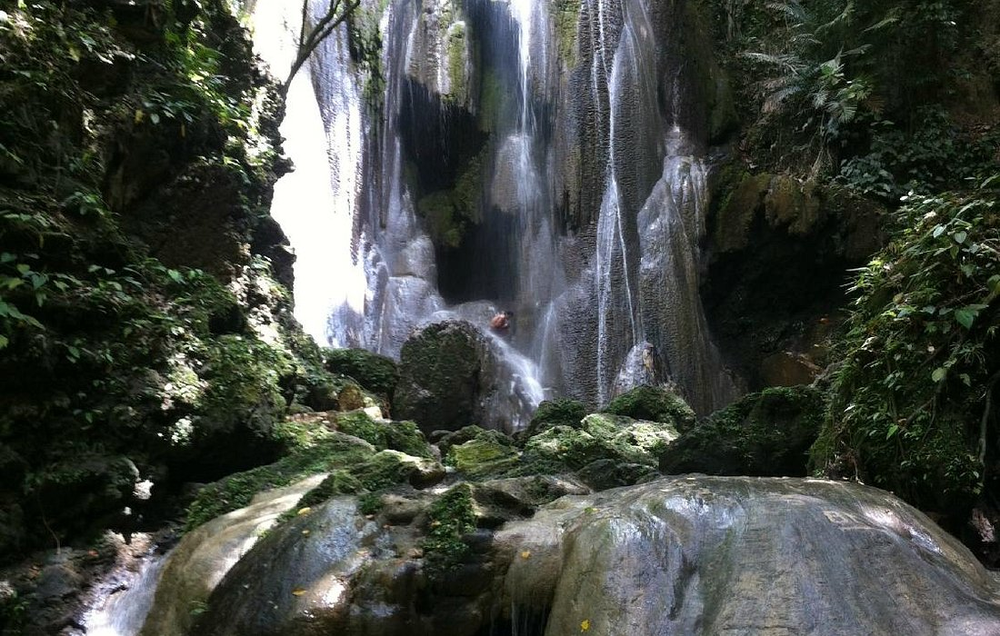

🌊 Catandayagan Falls: The Waterfall That Meets the Sea

Located on Ticao Island, Masbate, Catandayagan Falls is a stunning waterfall that plunges directly into the sea. Accessible only by boat, this natural wonder is a rare sight.
✨ The Legend of the Lost Kingdom
- Long ago, the island of Ticao was home to a prosperous kingdom ruled by King Lakan Masbate. His people lived in harmony with nature, worshiping the great waterfall that cascaded into the sea. It was believed that the waterfall was a gateway to the gods, where spirits of the ocean and land met.
- One fateful night, a violent storm struck the island. The kingdom was swallowed by the raging waters, leaving only the Catandayagan Falls as a reminder of its existence. Locals say that if you listen closely, you can hear the whispers of the lost kingdom in the waterfall’s roar.
🌿 Gabao Falls: The Hidden Gem of Lagonoy

Deep in the forests of Lagonoy, Camarines Sur, Gabao Falls requires an hour-long trek through rugged terrain, making it a paradise for adventurers.
✨ The Tale of the Guardian Spirits
- Deep in the forests of Lagonoy, Camarines Sur, Gabao Falls is said to be protected by guardian spirits. According to folklore, a young woman named Amihan once lived near the falls. She was known for her kindness and ability to heal the sick using the waterfall’s sacred waters.
- One day, a group of outsiders attempted to destroy the falls to build a road. As they struck the rocks, a powerful gust of wind knocked them back, and the waterfall grew stronger, as if defending itself. Locals believe that Amihan’s spirit still watches over Gabao Falls, ensuring its waters remain pure.
🌊 Nalalata Falls: The Cascading Beauty of Bula

Nestled in Bula, Camarines Sur, Nalalata Falls features a 60-foot drop, surrounded by lush forests and hidden caves.
✨ The Curse of the Twin Falls
- Long ago, two brothers, Datu Lata and Datu Nala, ruled neighboring villages. Though they were once close, greed and jealousy tore them apart. One day, they met at the waterfall to settle their dispute, but their anger caused the earth to shake, splitting the waterfall into two.
- The villagers believed the twin falls were a reminder of the brothers’ feud. It is said that those who visit Nalalata Falls with anger in their hearts will feel the weight of the curse, while those who come in peace will experience its healing energy.